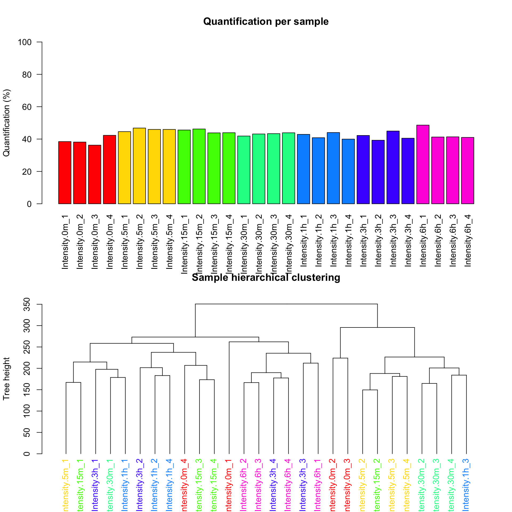
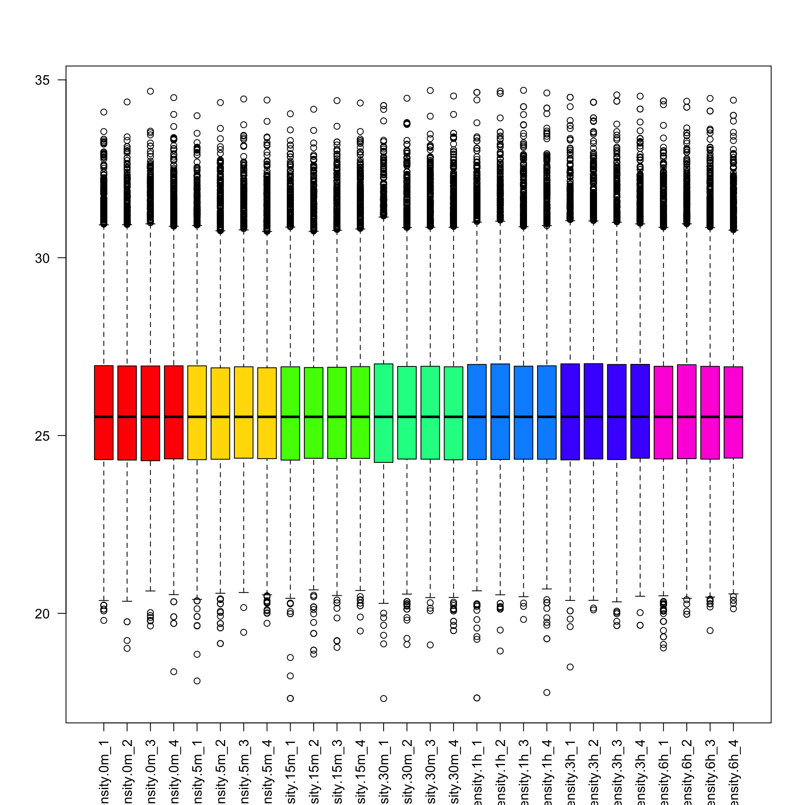
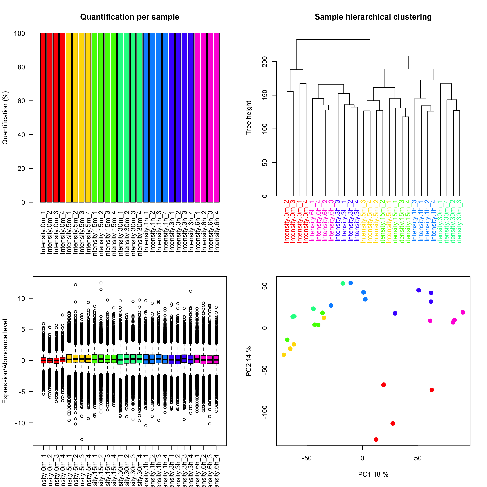

Preprocessing (phospho)proteomics data
Pengyi Yang
Dec 2019
1 Introduction
Before we can start interpreting biology from our phoshoproteomic data, the first step is to perform data preprocessing and QC. These include (but not limited to) assessing data quality, filtering, imputing missing values where appropriate, and normalising data to remove batch effects. PhosR package implements various functions for achieving these goals. Here, we will introduce a few QC measures and demonstrate some of the key functions for data normalisation and imputation.
2 Analysis on ESC differentiation dataset
The ESC differentiation dataset contains the temporal phosphoproteome profile during mouse embryonic stem cell (ESC) differentiation to epiblast-like cells (EpiLC) (Pengyi Yang et al. 2019), using label free approach. There are 12 profiled time points including 0h (ESC), 5min, 15min, 30min, 1h, 3h, 6h, 12h, 24h, 36h, 48h, and 72h (EpiLC). The dataset in plain text file ESC_Phospho (STY)Sites.txt is avaliable from (xxx). This file contains essentailly the orignal output from MaxQuant (https://www.maxquant.org/) which is a software for quantifying mass spectrometry machine outputs. We will start by loading PhosR package for subsequent analysis.
library(PhosR)2.1 Data wrangling
We can load the data into R using the read.delim() function. Note that the first row contains header information.
phospho.raw <- read.delim("/Users/pengyiyang/Dropbox (Sydney Uni)/SMoS/Teaching & Supervision/BioInfoSummer 19/ESC_Phospho (STY)Sites.txt", header = TRUE)After reading in the text file, we will extract some useful column information and concatenate them into strings as use them as id for each of our phosphosite in the dataset.
Ids <- paste(paste(sapply(strsplit(as.character(phospho.raw[,"Protein"]), ";"), function(x){x[1]}),
sapply(strsplit(as.character(phospho.raw[,"Gene.names"]), ";"), function(x){x[1]}),
paste(as.character(phospho.raw[,"Amino.acid"]), as.character(phospho.raw[,"Position"]), sep=""),
sapply(strsplit(as.character(phospho.raw[,"Sequence.window"]), ";"), function(x){x[1]}), sep="~"))
Ids[1:10]## [1] "A0A023T672~RBM8~S24~EAGGEDFAMDEDGDESIHKLKEKAKKRKGRG"
## [2] "A0A023T672~RBM8~S56~FGSEGSRARMREDYDSVEQDGDEPGPQRSVE"
## [3] "A0A023T672~RBM8~S42~KLKEKAKKRKGRGFGSEEGSRARMREDYDSV"
## [4] "A0A023T672~RBM8~S46~KAKKRKGRGFGSEEGSRARMREDYDSVEQDG"
## [5] "A0A023T672~RBM8~S166~VRGPPKGKRRGGRRRSRSPDRRRR_______"
## [6] "A0A023T672~RBM8~S168~GPPKGKRRGGRRRSRSPDRRRR_________"
## [7] "Q9R0X5~Rpgr~S914~NENPKGHMYDRVKSSSSEILGGNDPTSKDIK"
## [8] "Q9CWZ3-2~Rbm8a~S42~KLKEKAKKRKGRGFGSEGSRARMREDYDSVE"
## [9] "Q9CWZ3-2~Rbm8a~S45~EKAKKRKGRGFGSEGSRARMREDYDSVEQDG"
## [10] "O70589-3~Cask~S570~GSITFKIVPSYRTQSSSCEDLPSTTQPKGRQ"rownames(phospho.raw) <- IdsBefore we going forward, the first thing to do is to remove Reverse and Potential.contaminant entries. These are entires that are reported by MaxQuant. They are either false positive identifications (in case of Reverse) or real identification contaminated proteins other than those extracted from cells of interests.
del <- which(phospho.raw[,"Reverse"] == "+" | phospho.raw[,"Potential.contaminant"] == "+")
phospho.clean <- phospho.raw[-del,]Next, we will select columns that correspond to phosphosite quantification. These columns normally start with the key word Intensity and follow with sample-specific information. After selecting extracting the raw data from these columns we will transform the data using log2 and mark the missing values as NA
selected.cols <- grep("^Intensity.+_\\d", colnames(phospho.clean))
phospho.exp.full <- log2(as.matrix(phospho.clean[,selected.cols]))
phospho.exp.full[is.infinite(phospho.exp.full)] <- NAWe will also remove the time points after 6 hours for this analysis. Do you know why?
phospho.exp <- phospho.exp.full[,c(1:4, 37:40, 9:12, 21:24, 13:16, 29:32, 41:44)]Now, we have the quantification of all phosphosites in this experiment saved in phospho.exp.raw. Let us start with some basic QC.
dim(phospho.exp)## [1] 37620 28# color code by replicates at each time point
grps <- gsub("_\\d", "", colnames(phospho.exp))
cs <- rainbow(length(unique(grps)))
colorCodes <- sapply(grps, switch, Intensity.0m=cs[1], Intensity.5m=cs[2],
Intensity.15m=cs[3], Intensity.30m=cs[4], Intensity.1h=cs[5], Intensity.3h=cs[6], Intensity.6h=cs[7])
par(mfrow=c(2,1))
plotQC(phospho.exp, panel = 1, cols = colorCodes)
plotQC(phospho.exp, panel = 2, cols = colorCodes)
Notice that we have plotted the percentage of missing values and performed a hierarchical clustering using the plotQC function which is part of the PhosR package.
2.2 Filtering of phophosites
Given the high percentage of missing values (>50%), we will start by performing some filtering to remove phosphosites that are unquantified in majority of the samples. We introduce two filtering functions implemented in PhosR. They are selectGrps and selectOverallPercent. The selectGrps function select phosphosites by requring the percentage of quantified values in a treatment group to be equal or higher than a given value [0-1], and the number of treatment groups that meet this cutoff. For example, the following code filter to select phosphosites that have 75% (3 out of 4 replicates in case of ESC dataset) quantified in at least 3 time point.
phospho.exp.filtered1 <- selectGrps(phospho.exp, grps = grps, percent = 0.75, n = 3)The second function selectOverallPercent allows the selection of phosphosites that have be quantified in at least a given percentage of all samples. For example, the following select sites that have been quantified in 30% of all samples.
# filter to select phosphosites that have be quantified in at least 30% of all samples
phospho.exp.filtered2 <- selectOverallPercent(phospho.exp.filtered1, percent = 0.3)
dim(phospho.exp.filtered2)## [1] 15388 28par(mfrow=c(2,1))
plotQC(phospho.exp.filtered2, panel = 1, cols = colorCodes)
plotQC(phospho.exp.filtered2, panel = 2, cols = colorCodes)
2.3 Imputation
Now we have filtered the phosphosites that have large number of missing values, we will perform imputation to the remaining phosphosites so that subsequent analyses that require full matrix could be conducted properly. Before we perform imputation, we use the following code to perform a median-based centring of data in each treatment/time point.
# centring data across their median
phospho.exp.scaled <- medianScaling(phospho.exp.filtered2, scale = FALSE)
boxplot(phospho.exp.scaled, col=colorCodes, las=2)
We will use the following two steps for data imputation:
- First impute data by time points for each phosphosite. For each time point, we will impute the missing value if 50% (2 out of 4) replicates are quantified.
- Second impute the rest of the missing values using lower-tail imputation (
tImpute)
set.seed(1)
# step 1
phospho.exp.imputed1 <- ssImpute(phospho.exp.scaled, percent = 0.5, grps = grps)
# step 2
phospho.exp.imputed <- tImpute(phospho.exp.imputed1)
# finally, convert the data into ratios with respect to the first time point (0h)
phospho.exp.ratio <- phospho.exp.imputed - rowMeans(phospho.exp.imputed[,1:4])
plotQC(phospho.exp.ratio, col=colorCodes)
Quick quiz
- How many phosphosites do we have now?
- Did we lose any time points (columns)?
3 Session Info
sessionInfo()## R version 3.6.0 (2019-04-26)
## Platform: x86_64-apple-darwin15.6.0 (64-bit)
## Running under: macOS 10.15
##
## Matrix products: default
## BLAS: /System/Library/Frameworks/Accelerate.framework/Versions/A/Frameworks/vecLib.framework/Versions/A/libBLAS.dylib
## LAPACK: /Library/Frameworks/R.framework/Versions/3.6/Resources/lib/libRlapack.dylib
##
## locale:
## [1] en_AU.UTF-8/en_AU.UTF-8/en_AU.UTF-8/C/en_AU.UTF-8/en_AU.UTF-8
##
## attached base packages:
## [1] parallel stats4 stats graphics grDevices utils datasets
## [8] methods base
##
## other attached packages:
## [1] Biobase_2.44.0 GenomicRanges_1.36.0 GenomeInfoDb_1.20.0
## [4] IRanges_2.18.0 S4Vectors_0.22.1 BiocGenerics_0.30.0
## [7] scMerge_1.0.0 PhosR_0.1.0 directPA_1.4
## [10] calibrate_1.7.2 MASS_7.3-51.4 rgl_0.100.19
##
## loaded via a namespace (and not attached):
## [1] colorspace_1.4-1 RcppEigen_0.3.3.5.0
## [3] class_7.3-15 htmlTable_1.13.1
## [5] XVector_0.24.0 base64enc_0.1-3
## [7] rstudioapi_0.10 proxy_0.4-23
## [9] codetools_0.2-16 splines_3.6.0
## [11] knitr_1.23 Formula_1.2-3
## [13] jsonlite_1.6 cluster_2.0.9
## [15] shiny_1.3.2 BiocManager_1.30.4
## [17] compiler_3.6.0 backports_1.1.4
## [19] assertthat_0.2.1 Matrix_1.2-17
## [21] lazyeval_0.2.2 limma_3.40.6
## [23] later_0.8.0 acepack_1.4.1
## [25] htmltools_0.3.6 tools_3.6.0
## [27] rsvd_1.0.1 gtable_0.3.0
## [29] glue_1.3.1 GenomeInfoDbData_1.2.1
## [31] dplyr_0.8.1 Rcpp_1.0.1
## [33] bbmle_1.0.20 gdata_2.18.0
## [35] nlme_3.1-140 iterators_1.0.10
## [37] crosstalk_1.0.0 xfun_0.7
## [39] stringr_1.4.0 mime_0.6
## [41] miniUI_0.1.1.1 irlba_2.3.3
## [43] gtools_3.8.1 statmod_1.4.32
## [45] dendextend_1.12.0 zlibbioc_1.30.0
## [47] scales_1.0.0 pcaMethods_1.76.0
## [49] promises_1.0.1 SummarizedExperiment_1.14.0
## [51] RColorBrewer_1.1-2 SingleCellExperiment_1.6.0
## [53] yaml_2.2.0 gridExtra_2.3
## [55] ggplot2_3.1.1 rpart_4.1-15
## [57] latticeExtra_0.6-28 stringi_1.4.3
## [59] foreach_1.4.4 e1071_1.7-1
## [61] checkmate_1.9.3 caTools_1.17.1.2
## [63] BiocParallel_1.18.0 manipulateWidget_0.10.0
## [65] rlang_0.4.0 pkgconfig_2.0.2
## [67] matrixStats_0.55.0 bitops_1.0-6
## [69] M3Drop_1.10.0 evaluate_0.13
## [71] lattice_0.20-38 purrr_0.3.2
## [73] ruv_0.9.7 htmlwidgets_1.3
## [75] tidyselect_0.2.5 plyr_1.8.4
## [77] magrittr_1.5 R6_2.4.0
## [79] gplots_3.0.1.1 Hmisc_4.2-0
## [81] DelayedArray_0.10.0 pillar_1.4.1
## [83] foreign_0.8-71 mgcv_1.8-28
## [85] survival_2.44-1.1 RCurl_1.95-4.12
## [87] nnet_7.3-12 tibble_2.1.2
## [89] crayon_1.3.4 KernSmooth_2.23-15
## [91] rmarkdown_1.13 viridis_0.5.1
## [93] grid_3.6.0 data.table_1.12.2
## [95] reldist_1.6-6 digest_0.6.19
## [97] webshot_0.5.1 xtable_1.8-4
## [99] httpuv_1.5.1 numDeriv_2016.8-1
## [101] munsell_0.5.0 viridisLite_0.3.0